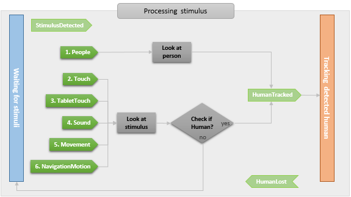

ALBasicAwareness¶
NAOqi Interaction engines - Overview | API | Getting started
What it does¶
ALBasicAwareness is a simple way to make the robot establish and keep eye contact with people.
ALBasicAwareness is an autonomous ability which is enabled by default when ALAutonomousLife is in solitary or in interactive state. For further details, see: Autonomous Abilities.
How it works¶
The ALBasicAwareness module enables the robot to be aware of the stimuli coming from its surrounding environment.
The robot doesn’t look for stimuli, but if he gets one (with its associated position), he processes this stimulus by looking at the origin of the stimulus and checking if there is a human there.
- If yes, he tracks the human,
- Else, he goes back to its previous occupation.
{kind=link}
Transistions from one state to another trigger the following events:
ALBasicAwareness/StimulusDetected(),ALBasicAwareness/HumanTracked(), andALBasicAwareness/HumanLost().
Processing stimulus - In depth¶
Several types of stimulus can be used so as to detect the presence of a human.
These types of stimulus can be individually enabled or disabled. For further details, see: Types of stimulus.
When several types of stimulus are activated together, a priority order defines which one prevails.
{kind=link}
Note that the Types of stimulus has an impact on the processing.
Combining Tracking and Waiting¶
By default, the 2 states are combined: the robot may track a human and, in the same time, wait for new stimuli. If one stimulus occurs, he interrupts his tracking and process this new stimulus.
For further details, see: Engagement Modes.
Settings¶
Types of stimulus¶
ALBasicAwarenessProxy::setStimulusDetectionEnabled allows you to enable
or disable the following types of stimulus:
| Stimulus type ... | Is triggered by ... | Is based on ... | Priority |
|---|---|---|---|
| “People“ | Human detected by the camera. | ALPeoplePerception | 1 |
| “Touch“ | A touch on head, arm or bumper. | ALTouch | 2 |
| “TabletTouch“ | A tablet touch. | ALTabletService | 3 |
| “Sound“ | Any perceived sound. | ALSoundLocalization | 4 |
| “Movement“ | Any perceived movement. | ALMovementDetection | 5 |
| “NavigationMotion“ | Any movement in front of the robot base. | Navigation/MotionDetected() |
6 |
It is also possible to trigger stimuli manually, using
ALBasicAwarenessProxy::triggerStimulus.
Tracking Modes¶
ALBasicAwarenessProxy::setTrackingMode offers the following options:
| Mode | The tracking uses ... |
|---|---|
| “Head“ | the head |
| “BodyRotation“ | the head and the rotation of the body |
| “WholeBody“ | the whole body, but doesn’t make it rotate |
| “MoveContextually“ | the head and autonomously performs small moves such as approaching the tracked person, stepping backward, rotating, etc. |
Engagement Modes¶
To allow a wider range of behaviors, ALBasicAwarenessProxy::setEngagementMode
allows to choose between 3 engagement modes: they specify how “focused” the robot
is on the engaged person.
“Unengaged“ (Default mode) |
When the robot is engaged with a user, he can be distracted by any stimulus, and engage with another person. |
| “FullyEngaged“ | As soon as the robot is engaged with a person, he stops listening to stimuli and stays engaged with the same person. If he loses the engaged person, he will listen to stimuli again and may engage with a different person. |
| “SemiEngaged“ | When the robot is engaged with a person, he keeps listening to the stimuli, and if he gets a stimulus, he will look in its direction, but he will always go back to the person he is engaged with. If he loses the person, he will listen to stimuli again and may engage with a different person. |
Pausing and Resuming¶
ALBasicAwareness can be paused, which means it will stop making the robot move until it is resumed.
When resumed, if ALBasicAwareness was tracking someone before being paused, it will try to retrieve the last tracked person and then to resume the tracking.
These pauses can be triggered:
Automatically
When the activity uses the head motors in any way
(e.g. when launching an animation, or running a function that moves the head joints
such as ALMotionProxy::angleInterpolationWithSpeed).
ALBasicAwareness is then considered of lower priority, and paused.
It will be automatically resumed when the head motors are freed.
Manually
When the activity uses ALBasicAwarenessProxy::pauseAwareness
and ALBasicAwarenessProxy::resumeAwareness.
In case the application needs to freeze the robot head for some time (e.g. when taking a picture),
manually pausing is more interesting than stopping ALBasicAwareness,
with which the currently tracked person is lost.
Note
If ALBasicAwareness is disabled while it is paused, the pause mode will exit automatically.
Performances and Limitations¶
ALBasicAwareness module is a “meta-module”, i.e. it uses other modules to add its extra features. The list of modules is the following:
- checking that the stimulus actually comes from a human is done with ALPeoplePerception,
- sound detection is done with ALSoundLocalization,
- movement detection is done with ALMovementDetection,
- people detection is done with ALPeoplePerception,
- touch detection is done with ALTouch,
- head movements uses ALTracker.
Thus, parallel calls to these modules from another program or Choregraphe box when ALBasicAwareness is running should be done carefully.